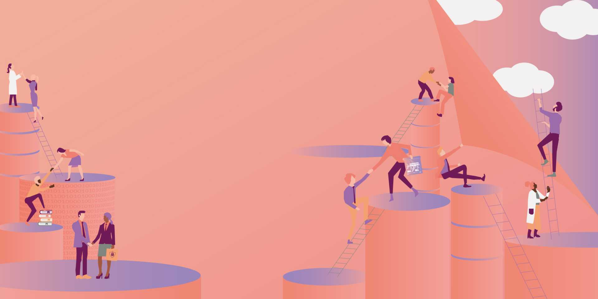

Aymeric Dussart
Vice-président, Finances et administration
Aéroports de Montréal

Du 9 au 11 novembre 2026 — Québec
Le plus grand rendez-vous réunissant les territoires d’Auvergne-Rhône-Alpes (France), du Québec et de la francophonie canadienne.
Les EJC rassemblent, alternativement sur chaque territoire, des milliers d’experts et de décideurs autour d’évènements francophones et interdisciplinaires.
La prochaine édition des EJC se tiendra en novembre 2026 au Québec.
Pendant les EJC, des experts et décideurs de tous horizons collaborent. Ils font des rencontres marquantes. Et ils saisissent de nouvelles occasions pour contribuer, ensemble, à l’évolution de la société.
Si vous souhaitez participer à la réflexion et à l’action pour une société plus innovante et responsable, les Entretiens Jacques Cartier constituent un rendez-vous incontournable !

C'est en mêlant les savoirs et les expériences des mondes économique, académique, institutionnel, culturel et scientifique que nous pouvons, ensemble, améliorer et faire évoluer la société.
Les progrès de la société sont liés aux transferts de connaissances et aux innovations interdisciplinaires. Les EJC donnent vie à vos visions.
En englobant tous les enjeux de société, les EJC font de ces collaborations un moteur d'évolution pour une société plus innovante et responsable.
Découvrez les colloques, conférences et ateliers de l'édition 2026.
Explorer le programmeDes expertes et experts de tous horizons partagent leur vision.
Voir les intervenantsProposez votre projet et contribuez au programme des EJC 2026.
Déposer un projet
Vice-président, Finances et administration
Aéroports de Montréal

Présidente
PULSALYS

Directeur des opérations
Lyonbiopôle

PDG
CIRANO
Rejoignez des milliers d'experts et de décideurs pour trois jours d'échanges, de découvertes et de collaborations entre l'Auvergne-Rhône-Alpes, le Québec et la francophonie canadienne.